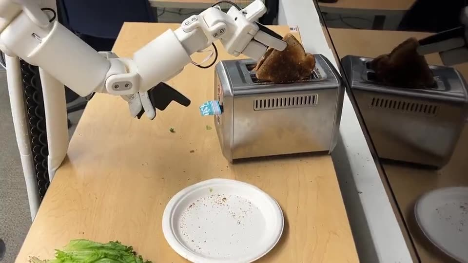
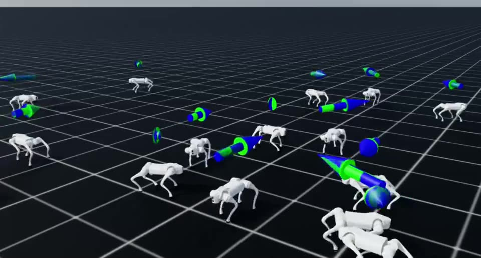
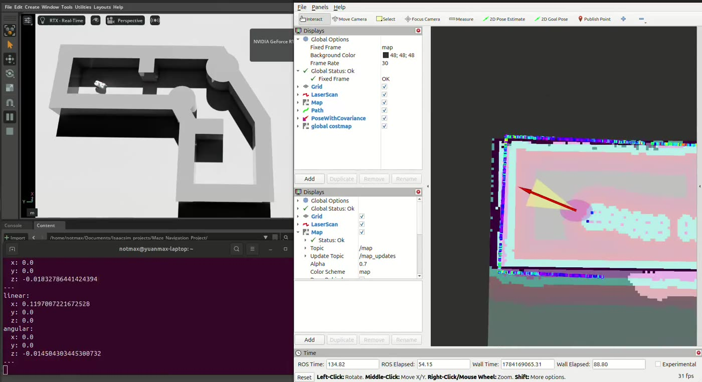
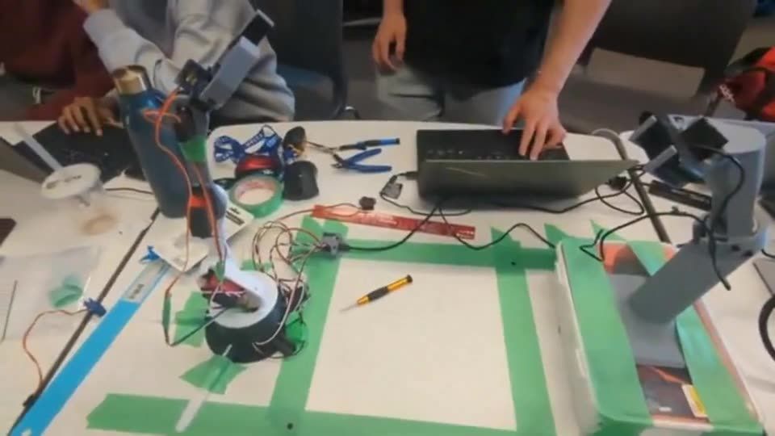
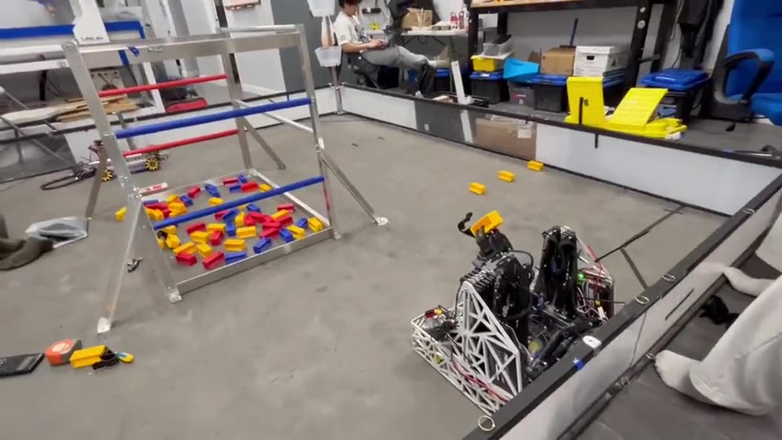
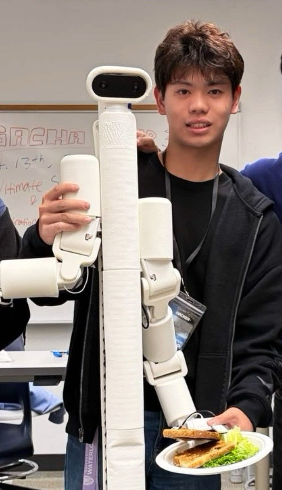

Max Yuan
Robot learning and manipulation. Mechatronics Engineering at the University of Waterloo.

Hi, I'm Max
I'm a first-year Mechatronics Engineering student at the University of Waterloo, and I work on robots that learn to handle things.
On the WATonomous humanoid team I fine-tuned π₀.5, a vision-language-action model, to pick up a cube and place it in a tray. On my own I'm training a Unitree Go2 to walk with reinforcement learning in Isaac Lab.
Open to robotics and ML co-op roles
Projects
-

π₀.5 pick and place
A vision-language-action model fine-tuned so a humanoid arm picks up a cube and places it in a tray, on demonstrations I recorded with a leader arm in Isaac Sim.
-

The Brackey Way
A dual-arm Bracket Bot that makes a sandwich on its own. A fine-tuned π₀ policy handles the hard grasps, and OpenCV with inverse kinematics handles the simple ones.
-

Go2 quadruped locomotion
A walking policy for a Unitree Go2, trained from scratch with PPO in a custom Isaac Lab environment.
-

Autonomous maze navigation
A Nova Carter that maps a maze it hasn't seen with SLAM, then plans and drives to the goal with Nav2.
-

RICO, a tool-fetching arm
Ask for a tool in plain language and the arm finds it on the bench with YOLOv8 and hands it to you.
-

FTC team 18844
Co-captain and lead programmer: PID pathing on fused odometry, and a vision pickup built on OpenCV and a CNN.
-

StudyBuddy 9520
A desk turret that watches you study and fires a ping-pong ball when you get distracted. YOLOv8 spots it; PID loops aim.
Experience
-
Sept 2026 – now
WATonomous
Humanoid team, robot learning
Fine-tuned π₀.5 so the Pioneer arm picks up a cube and places it in a tray in Isaac Sim, and wrote the leader-arm recorder that collects its demonstrations as a LeRobot dataset.
Case study -
Sept 2023 – Apr 2025
FIRST Tech Challenge, team 18844
Co-captain, lead programmer and driver
Led the software: PID pathing on fused odometry and IMU data, and a vision pickup built on OpenCV and a custom CNN. Ran robotics workshops for 60+ kids across the GTA.
Case study -
Sept 2026 – Apr 2031
University of Waterloo
BASc, Mechatronics Engineering, Honours Co-op
Awards
-
Sept 2026
1st place, BOTS hackathon
Battle of the Schools, WAT.ai vs. UTMIST · The Brackey Way
-
Oct 2025
2nd place, RythmHacks 2025
StudyBuddy 9520, an anti-procrastination turret
-
2025
1st place Connect Award, FIRST World Championships
Ochoa Division, representing Team Canada with FTC team 18844
-
2nd place Inspire Award, FTC Ontario Provincials
With FTC team 18844
Skills
Hover or tap a skill to see which projects I used it in.
Languages
Environments
Simulation and vision
Robotics and control
Machine learning
Learning next

About
I like robots that have to deal with the real world.
I'm a Mechatronics Engineering student at the University of Waterloo (Honours Co-op, class of 2031). I'm most interested in robots that work in the physical world: legged locomotion, mobile autonomy, and manipulation that mixes learned policies with classical control.
Most of my recent work is robot learning. On WATonomous's humanoid team I fine-tuned π₀.5 for pick and place and wrote the leader-arm recorder that collects its demonstrations. At the BOTS hackathon my team fine-tuned π₀ to pull toast out of a toaster, which won 1st place. On my own I'm training a Unitree Go2 to walk with PPO in Isaac Lab, and I built a ROS2 Nav2 stack that maps and navigates a maze in Isaac Sim.
Before university I was co-captain and lead programmer of FTC team 18844. We represented Team Canada at the 2025 FIRST World Championships, and I ran robot showcases and SPIKE robotics workshops for 60+ kids across the GTA.
Contact
Looking for a robotics or ML co-op. Email works best.